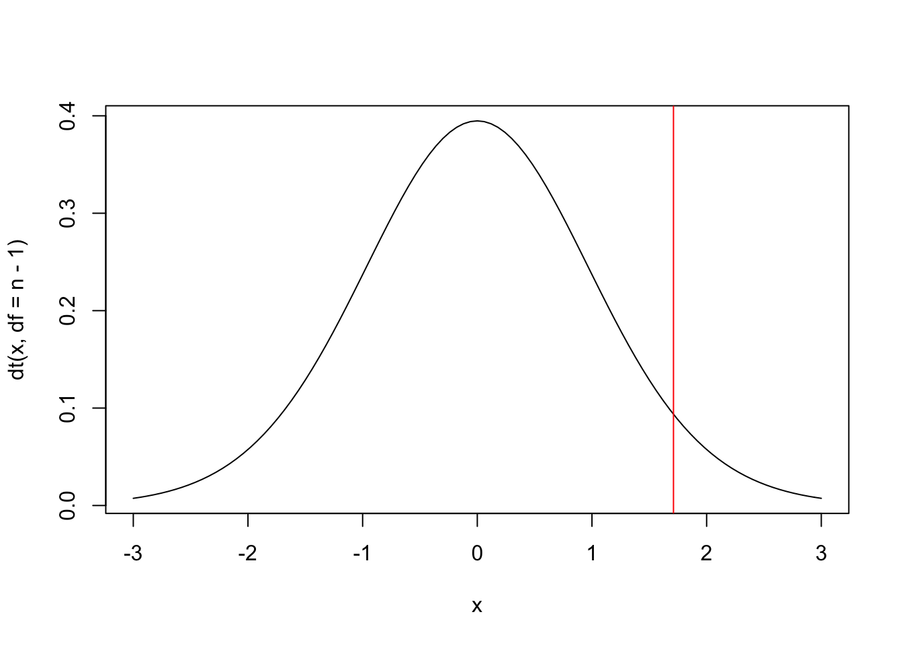

5 Inferência Clássica
Inferência é o procedimento que visa atualizar a informação sobre parâmetros a partir dos dados amostrais. Para (DeGroot and Schervish 2012, 378), ‘inferência estatística é um procedimento que produz uma declaração probabilística a respeito de uma ou mais partes de um modelo estatístico’21. Conclusões obtidas a partir dos dados embasam a lógica indutiva, i.e., aquela que parte do caso particular para o caso geral e que se opõe à lógica dedutiva que vai do caso geral para o particular. O princípio indutivo se enquadra na noção de um decisor, a partir de uma amostra (caso particular), inferir sobre parâmetros universais/populacionais.
(Berger 1985, 16) e (Paulino, Turkman, and Murteira 2003, 6) indicam que os procedimentos baseados no paradigma clássico baseiam-se em alguns princípios, tais como máxima verossimilhança, não viés22, variância mínima, mínimos quadrados, consistência, suficiência e eficiência. Os clássicos consideram que existe um parâmetro \(\theta\) desconhecido para o qual não se atribui probabilidades. A amostra é obtida aleatoriamente de um universo de interesse, sendo uma das tantas - se não infinitas - possíveis amostras. (Berger 1985, 26) aponta que tal princípio coloca os clássicos como incondicionalistas, pois pondera-se sobre todos os dados possíveis e não condicionado ao que foi observado.
A abordagem clássica possui três tipos de estimação: Pontual (ou por ponto), por Intervalo de Confiança (IC/ICo) e por Teste de Hipóteses (TH), detalhadas a seguir.
5.1 Estimação Pontual
Na estimação pontual utiliza-se uma estatística, calculada a partir de um estimador como estimativa (pontual) de um certo parâmetro, conforme Definição 5.1 e 5.2. Em outras palavras, é utilizado um único valor amostral (ponto) para estimar \(\theta\), simbolizado por \(\hat{\theta}\) e lido como teta chapéu.
5.1.1 Estimadores e suas propriedades
Média amostral \(\bar{x}\)
A média amostral do Exemplo (2.9) é um estimador não viesado da média universal \(\mu\) segundo o plano amostral AAS, com ou sem reposição. Isto ocorre pelo fato de a esperança ser linear, portanto a dependência entre as observações não interfere no resultado. \(\\\)idade do Exemplo 4.4 é dada por \[\mu = \frac{24+32+49}{3} = \frac{105}{3} = 35.\]
Do Exemplo 4.19 pode-se verificar que a média (esperança) das médias amostrais considerando o plano AASc é igual a \(\mu\), i.e., \[E\left[h(\boldsymbol{x})\right] = E\left[\bar{x}\right] = \frac{24.0+28.0+36.5+28.0+32.0+40.5+36.5+40.5+49.0}{9}=\frac{315}{9}=35.\]
## [1] 35Do Exemplo 4.22 tem-se o vetor mxc <- c(24.0,28.0,36.5,28.0,32.0,40.5,36.5,40.5,49.0).
## [1] 35Proporção amostral \(p\)
A proporção amostral é um estimador não viesado da proporção universal \(\pi\) (Eq. (4.3)) segundo o plano amostral AAS, com ou sem reposição. Pode-se definir este estimador por \[\begin{align*} p = \frac{\sum_{i=1}^n x_i}{n} \tag{5.3} \end{align*}\]
Variância amostral \(s^2\)
A variância amostral é um estimador não viesado da variância universal \(\sigma^2\) segundo o plano amostral AAS com reposição. \(\\\)5.2 (Estimação por) Intervalo de Confiança
5.2.1 Média
\(\sigma\) conhecido
O IC para a média universal com \(\sigma\) conhecido é dado pela expressão \[\begin{equation} IC \left[ \mu, 1-\alpha \right] = \bar{x} \mp z \dfrac{\sigma}{\sqrt{n}} = \left[ \bar{x} - z \dfrac{\sigma}{\sqrt{n}}, \bar{x} + z \dfrac{\sigma}{\sqrt{n}} \right], \tag{5.4} \end{equation}\] onde \(1-\alpha\) é a confiança do intervalo, \(\bar{x}\) é a média amostral, \(\sigma\) é o desvio padrão universal conhecido, \(n\) é o tamanho da amostra e \(z=z_{\frac{\alpha}{2}}\) é o quantil da distribuição normal padrão que acumula \(\frac{\alpha}{2}\) de probabilidade.
n <- 10
m <- 1.63
sigma <- 0.05 # 'sigma' universal
z <- abs(qnorm(0.025)) # |-1.959964|
(e <- z*sigma/sqrt(n)) # Margem de erro## [1] 0.031## [1] 1.6## [1] 1.66# Princípio de relatório automático
cat('O IC 95% para a média é [',
round(LImusig,2), ',',
round(LSmusig,2), '].')## O IC 95% para a média é [ 1.6 , 1.66 ].\(\sigma\) desconhecido
O IC para a média universal com \(\sigma\) desconhecido é dado pela expressão \[\begin{eqnarray} IC \left[ \mu, 1-\alpha \right] = \bar{x} \mp t \dfrac{s}{\sqrt{n}} = \left[ \bar{x} - t \dfrac{s}{\sqrt{n}}, \bar{x} + t \dfrac{s}{\sqrt{n}} \right], \tag{5.5} \end{eqnarray}\] onde \(1-\alpha\) é a confiança do intervalo, \(\bar{x}\) é a média amostral, \(s\) é o desvio padrão amostral, \(n\) é o tamanho da amostra e \(t=t_{n-1, \frac{\alpha}{2}}\) é o quantil da distribuição \(t\) com \(n-1\) graus de liberdade que acumula \(1-\frac{\alpha}{2}\) de probabilidade. Note a troca de \(\sigma\) por \(s\), implicando na penalidade de utilizar \(t\) no lugar de \(z\).
n <- 10
m <- 1.63
s <- 0.05 # 's' amostral
t <- abs(qt(0.025, n-1)) # |-2.2621572|
(e <- t*s/sqrt(n)) # Margem de erro## [1] 0.0358## [1] 1.59## [1] 1.67# Princípio de relatório automático
cat('O IC 95% para a média é [',
round(LImus,2), ',',
round(LSmus,2), '].')## O IC 95% para a média é [ 1.59 , 1.67 ].5.2.2 Proporção
O IC para a proporção populacional \(\pi\) é dado pela expressão \[\begin{equation} IC \left[ \pi, 1-\alpha \right] = p \mp z \sqrt{\dfrac{p(1-p)}{n}} = \left[ p - z \sqrt{\dfrac{p(1-p)}{n}}, p + z \sqrt{\dfrac{p(1-p)}{n}} \right] \tag{5.6} \end{equation}\] onde \(1-\alpha\) é a confiança do intervalo, \(p\) é a proporção amostral, \(n\) é o tamanho da amostra e \(z=z_{\frac{\alpha}{2}}\) é o quantil da distribuição normal padrão que acumula \(\frac{\alpha}{2}\) de probabilidade.
qnorm.
## [1] 0.0701## [1] 0.13## [1] 0.27# Princípio de relatório automático
cat('O IC 95% para a proporção é [',
round(LIpi,2), ',',
round(LSpi,2), '].')## O IC 95% para a proporção é [ 0.13 , 0.27 ].5.3 (Estimação por) Teste de Hipóteses
Seja um parâmetro \(\theta\) pertencente a um espaço paramétrico \(\Theta\), i.e., o conjunto de todos os possíveis valores de \(\theta\). Considere uma partição tal que \(\Theta = \Theta_0 \cup \Theta_1\) e \(\Theta_0 \cap \Theta_1 = \emptyset\). Um teste de hipóteses é uma regra de decisão que permite decidir, à luz das informações disponíveis, se é mais verossímil admitir \(\theta \in \Theta_0\) ou \(\theta \in \Theta_1\). A hipótese que envolve \(\Theta_0\) é chamada hipótese nula, e a que envolve \(\Theta_1\) é a hipótese alternativa. Tais hipóteses podem ser escritas na estrutura de Neyman-Pearson, na forma
\[\left\{ \begin{array}{l} H_0: \theta \in \Theta_0\\ H_1: \theta \in \Theta_1 \\ \end{array} \right. .\]
Usualmente nos procedimentos de testes de hipóteses admite-se inicialmente que \(H_0\) seja verdadeira, dito sob \(H_0\). Por este motivo a hipótese nula sempre deve conter a igualdade, o que indicado no quadro abaixo. Note que não há uma ‘regra da hipótese nula’, a indicação está colocada desta forma apenas por motivos didáticos.

As definições do quadro acima implicam em três tipos de hipótese alternativa, conforme figura a seguir. A hipótese bilateral é a típica hipótese de equilíbrio, geralmente utilizada quando não há definição prévia sobre a direção da hipótese, tal como no caso de decidir se uma moeda deve ou não ser considerada equilibrada. A hipótese unilateral inferior é uma hipótese que indica um piso de referência, tal como no caso de decidir sobre a eficácia mínima de um tratamento (maior, melhor). A hipótese unilateral superior é uma hipótese que indica um teto de referência, tal como no caso de decidir sobre a uma ação dependente de uma taxa máxima de mortalidade (menor, melhor).
\(\;\) a. A companhia de transporte afirma que, em média, o intervalo entre sucessivos ônibus de uma determinada linha é de 15 minutos. Uma associação de usuários de transportes coletivos acha que a pontualidade é muito importante, e deseja testar a afirmação da companhia.
\(\;\) b. Os amortecedores de automóveis que circulam em cidades duram pelo menos 100 mil quilômetros em média, segundo a informação de algumas oficinas especializadas. O proprietário de uma locadora de veículos deseja testar esta afirmação.
\(\;\) c. Um veterinário afirma ter obtido um ganho médio diário de pelo menos 3 litros de leite por vaca com uma nova composição de ração. Um pecuarista acredita que o ganho não é tão grande assim.
\(\;\) d. Algumas garrafas de cerveja declaram em seus rótulos conter 600mL. Os órgãos de fiscalização desejam avaliar se uma fábrica deve ou não ser autuada por engarrafar cervejas com uma quantidade menor que o indicado no rótulo.
\(\;\) e. O dado de um cassino parece estar viciado, saindo o valor 1 com uma frequência muito grande.
\(\;\) f. Um fabricante afirma que a sua vacina previne pelo menos 80% dos casos de uma doença. Um grupo de médicos desconfia que a vacina não é tão eficiente assim. \(\\\)
A partir da premissa de que \(H_0\) é verdadeira, compara(m)-se o(s) valor(es) descrito(s) nesta hipótese com os dados da amostra através de uma medida chamada estatística de teste ou quantidade pivotal. Caso a estatística do teste indique uma pequena distância entre o(s) valor(es) de \(H_0\) e a estatística, admite-se ou não se rejeita \(H_0\); caso a distância seja grande, rejeita-se \(H_0\). As distâncias que fazem admitir ou rejeitar \(H_0\) são avaliadas em termos probabilísticos, indicadas nos gráficos acima respectivamente pelas regiões claras e escuras. A divisão destas regiões é dada por valores críticos, quantis das distribuições associadas às estatísticas de teste que serão detalhadas a seguir.

É possível ainda considerar formas mais precisas de avaliar as distâncias probabilisticas das estatísticas de teste do que simplesmente indicando ‘acima’ ou ‘abaixo’ de um valor crítico. Pelo paradigma clássico, atribui-se uma medida que varia entre 0 e 1, chamada p-value, valor-p ou nível descritivo amostral. Este medida possui múltiplas definições e ainda é bastante discutida na literatura. Não é raro ser mal interpretada, portanto será considerada como um grau de evidência em favor de \(H_0\). Rejeita-se \(H_0\) se este grau de evidência for baixo, inferior a um valor de referência chamado nível de significância e representado por \(\alpha\); caso contrário, admite-se ou não se rejeita \(H_0\). Este valor de significância está associado à probabilidade de erro do tipo I, ou o caso em que erramos ao rejeitar uma hipótese \(H_0\) verdadeira. Tal valor é arbitrário, ou seja, deve ser definido pelo dono do problema ao estipular o quanto admite de probabilidade máxima de erro do tipo I. Existem valores de significância típicos, usualmente 10%, 5%, 1%, e 0.1%. Devido a um exemplo dado por (Fisher 1925)23, o valor de 5% tornou-se uma referência para o valor de \(\alpha\), ainda que existam propostas mais elaboradas e melhor embasadas na teoria Estatística. Destacam-se os trabalhos de (Gannon, Pereira, and Polpo 2019), (Pereira and Stern 1999) e (Pereira and Wechsler 1993).
Associação com intervalos de confiança
Os testes de hipóteses possuem as mesmas características e propriedades dos seus respectivos intervalos de confiança. Desta forma, apresenta-se um breve exemplo abordando a equivalência entre os TH e os IC para a proporção universal \(\pi\).
Example 5.9 (TH \(\equiv\) IC) Suponha uma moeda com probabilidade de face cara \(Pr(H)=\pi\). Em princípio não sabemos o valor de \(\pi\), e pode ser interessante considerar duas configurações:
\[\left\{ \begin{array}{l} H_0: \mbox{a moeda é equilibrada}\\ H_1: \mbox{a moeda não é equilibrada}\\ \end{array} \right. \equiv \left\{ \begin{array}{l} H_0: \pi = 0.5 \\ H_1: \pi \ne 0.5 \\ \end{array} \right. .\]
Sob \(H_{0}\) (i.e., supondo \(H_{0}\) verdadeira), espera-se observar ‘cara’ em 50% dos resultados, com alguma variação em torno de 50%. Considerando a Equação (5.6) pode-se obter a margem de erro esperada para esta oscilação em função do tamanho da amostra \(n\) para, digamos, 95% dos casos: \[ IC \left[ \pi, 95\% \right] = 0.5 \mp 1.96 \sqrt{\dfrac{0.5 \left(1-0.5\right)}{n}} = 0.5 \mp \dfrac{0.98}{\sqrt{n}}. \]
Assim, ao realizar \(n=100\) lançamentos e observar uma frequência de caras no intervalo \[ IC \left[ \pi, 95\% \right] = 0.5 \mp \dfrac{0.98}{\sqrt{100}} = \left[ 0.402,0.598 \right] = \left[ 40.2\%,59.8\% \right] \]
pode-se considerar a moeda equilibrada com \(1-\alpha=95\%\) de confiança. Caso a frequência seja inferior a \(40.2\%\) ou superior a \(59.8\%\), há indícios de que a moeda seja desequilibrada, também com 95% de confiança. Pela terminologia dos testes de hipóteses, não se rejeita \(H_{0}\) com \(\alpha=5\%\).Se \(n=25\), \[ IC \left[ \pi, 95\% \right] = 0.5 \mp \dfrac{0.98}{\sqrt{25}} = \left[ 0.304,0.696 \right] = \left[ 30.4\%,69.6\% \right] \] e obtém-se um intervalo maior se comparado a \(n=100\), i.e., menos preciso para a mesma confiança de 95%. Como exercício, use a função para definir outros valores para \(n\) e teste este resultado em uma moeda.
# IC95% sob H0: \pi=0.5
ic <- function(n){
cat('[', 0.5-.98/sqrt(n), ',',
0.5+.98/sqrt(n), ']')
}
ic(100)## [ 0.402 , 0.598 ]## [ 0.304 , 0.696 ]5.3.1 Testes Paramétricos Univariados
TESTE 1 - Teste \(z\) para média de uma amostra
Hipótese avaliada
Uma amostra de \(n\) sujeitos (ou objetos) vem de uma população de média \(\mu\) igual a um valor especificado \(\mu_0\)?
Suposições
S1. O desvio padrão universal \(\sigma\) é conhecido;
S2. A amostra foi selecionada aleatoriamente da população que representa;
S3. A distribuição dos dados na população que a amostra representa é normal. Pelo Teorema Central do Limite, tal suposição torna-se menos importante à medida que o tamanho da amostra aumenta.
Testes relacionados
TESTE 13 - Teste dos postos sinalizados de Wilcoxon para uma amostra
Estatística do teste
Sob \(H_0: \mu = \mu_0\), \(H_0: \mu \ge \mu_0\) ou \(H_0: \mu \le \mu_0\),
\[\begin{equation}
z_{teste}=\frac{\bar{x}-\mu_0}{\sigma/\sqrt{n}} \sim \mathcal{N}(0,1).
\tag{5.7}
\end{equation}\]
Valor-p
Sob \(H_0: \mu = \mu_0\),
\[\begin{equation}
\text{Valor-p} = 2Pr(Z \le -|z_{teste}|).
\tag{5.8}
\end{equation}\]
Sob \(H_0: \mu \ge \mu_0\), \[\begin{equation} \text{Valor-p} = Pr(Z \le z_{teste}). \tag{5.9} \end{equation}\]
Sob \(H_0: \mu \le \mu_0\), \[\begin{equation} \text{Valor-p} = Pr(Z \ge z_{teste}). \tag{5.10} \end{equation}\]
Decisão Estatística: Rejeita-se \(H_0\) com \(\alpha=5\%\) pois \(1.79 > 1.64\).
Conclusão Experimental: A amostra sugere que a média de altura dos alunos da PUCRS deve ser maior do que 167 cm. \(\\\)
Decisão Estatística: Rejeita-se \(H_0\) com \(\alpha=5\%\) pois \(0.0367 < 0.05\).
Conclusão Experimental: A amostra sugere que a média de altura dos alunos da PUCRS deve ser maior do que 167 cm. \(\\\)
# Definindo os valores indicados no enunciado
mu0 <- 167
n <- 25
x_bar <- 172
sigma <- 14
(zt <- (x_bar-mu0)/(sigma/sqrt(n))) # estatística do teste, note a maior precisão## [1] 1.79curve(dnorm(x), -3, 3) # gráfico da normal padrão
abline(v = qnorm(.95), col = 'red') # valor crítico de ≈1.64
## [1] 0.0371TESTE 2 - Teste \(t\) para média de uma amostra
Hipótese avaliada
Uma amostra de \(n\) sujeitos (ou objetos) vem de uma população de média \(\mu\) igual a um valor especificado \(\mu_0\)?
Suposições
S1. A amostra foi selecionada aleatoriamente da população que representa;
S2. A distribuição dos dados na população que a amostra representa é normal.
Testes relacionados
TESTE 14 - Teste dos postos sinalizados de Wilcoxon para uma amostra
Estatística do teste
Sob \(H_0: \mu = \mu_0\),
\[\begin{equation}
t_{teste}=\frac{\bar{x}-\mu_0}{s/\sqrt{n}} \sim \mathcal{t}(gl),
\tag{5.11}
\end{equation}\]
onde \(gl=n-1\) indica os graus de liberdade que definem a distribuição \(t\).
Valor-p
Sob \(H_0: \mu = \mu_0\),
\[\begin{equation}
\text{Valor-p} = 2Pr(T \le -|t_{teste}|).
\tag{5.12}
\end{equation}\]
Sob \(H_0: \mu \ge \mu_0\), \[\begin{equation} \text{Valor-p} = Pr(T \le t_{teste}). \tag{5.13} \end{equation}\]
Sob \(H_0: \mu \le \mu_0\), \[\begin{equation} \text{Valor-p} = Pr(T \ge t_{teste}). \tag{5.14} \end{equation}\]
Decisão Estatística: Rejeita-se \(H_0\) com \(\alpha=5\%\) pois \(1.786 > 1.711\).
Conclusão Experimental: A amostra sugere que a média de altura dos alunos da PUCRS deve ser maior do que 167 cm. \(\\\)
Decisão Estatística: Rejeita-se \(H_0\) com \(\alpha=5\%\) pois \(Pr(t>1.786) < 0.05\).
Conclusão Experimental: A amostra sugere que a média de altura dos alunos da PUCRS deve ser maior do que 167 cm. \(\\\)
# Definindo os valores indicados no enunciado
mu0 <- 167
n <- 25
x_bar <- 172
s <- 14
(tt <- (x_bar-mu0)/(s/sqrt(n))) # estatística do teste, note a maior precisão## [1] 1.79curve(dt(x, df = n-1), -3, 3) # gráfico da t com gl=25-1=24
abline(v = qt(.95, df = n-1), col = 'red') # valor crítico de ≈1.711
## [1] 0.0434TESTE 3 - Testes para proporção de uma amostra, binomial (exato) e normal (assintótico)
Hipótese avaliada
Em uma população composta de duas categorias, a proporção \(\pi\) de observações em uma das categorias é igual a um valor específico \(\pi_0\)?
Suposições
S1. Cada observação pode ser classificada em sucesso ou fracasso;
S2. Cada uma das \(n\) observações (condicionalmente) independentes é selecionada aleatoriamente de uma população;
S3. A probabilidade de sucesso \(\pi\) se mantém constante a cada observação.
Estatística do teste (assintótico)
Sob \(H_0: \pi = \pi_0\),
\[\begin{equation}
z_{teste}=\frac{p-\pi_0}{\sqrt{\pi_0 (1-\pi_0)/n}} \sim \mathcal{N}(0,1).
\tag{5.15}
\end{equation}\]
Valor-p (assintótico)
Sob \(H_0: \pi = \pi_0\), vide Equação (5.8).
Sob \(H_0: \pi \ge \pi_0\), vide Equação (5.9).
Sob \(H_0: \pi \le \pi_0\), vide Equação (5.10).
Valor-p (exato)
Seja \(X\) o número de sucessos em \(n\) ensaios de Bernoulli. Sob \(H_0: \pi = \pi_0\) ocorre que \(X \sim \mathcal{B}(n,\pi_0)\), se \(x>\frac{n}{2}\) e \(I = \{ 0,1,\ldots,n-x, x,\ldots,n \}\),
\[\begin{equation}
\text{Valor-p} = Pr(n-x \ge X \ge x | \pi = \pi_0) = \sum_{i \in I} {n \choose i} \pi_{0}^i (1-\pi_0)^{n-i},
\tag{5.16}
\end{equation}\]
se \(x<\frac{n}{2}\) e \(I = \{ 0,1,\ldots,x, n-x,\ldots,n \}\), \[\begin{equation} \text{Valor-p} = Pr(x \ge X \ge n-x | \pi = \pi_0) = \sum_{i \in I} {n \choose i} \pi_{0}^i (1-\pi_0)^{n-i}, \tag{5.17} \end{equation}\]
e \(\text{Valor-p} = 1\) se \(x=\frac{n}{2}\).
Sob \(H_0: \pi \le \pi_0\), \[\begin{equation} \text{Valor-p} = Pr(X \ge x | \pi = \pi_0) = \sum_{i=x}^{n} {n \choose i} \pi_{0}^i (1-\pi_0)^{n-i} \tag{5.18} \end{equation}\]
Sob \(H_0: \pi \ge \pi_0\), \[\begin{equation} \text{Valor-p} = Pr(X \le x | \pi = \pi_0) = \sum_{i=0}^{x} {n \choose i} \pi_{0}^i (1-\pi_0)^{n-i} \tag{5.19} \end{equation}\]
Decisão Estatística: Rejeita-se \(H_0\) com \(\alpha=5\%\) pois \(1.73 > 1.64\).
Conclusão Experimental: A amostra sugere que a proporção de caras da moeda deve ser considerada maior que 0.5. \(\\\)
Decisão Estatística: Rejeita-se \(H_0\) com \(\alpha=5\%\) pois \(0.0418 < 0.05\).
Conclusão Experimental: A amostra sugere que a proporção de caras da moeda deve ser considerada maior que 0.5. \(\\\)
## [1] 0.75## [1] 1.73## [1] 0.0416# usando a função prop.test, sem a correção de Yates
prop.test(x, n, pi0, alternative = 'greater', correct = FALSE)##
## 1-sample proportions test without continuity correction
##
## data: x out of n, null probability pi0
## X-squared = 3, df = 1, p-value = 0.04
## alternative hypothesis: true p is greater than 0.5
## 95 percent confidence interval:
## 0.513 1.000
## sample estimates:
## p
## 0.75Decisão Estatística: não se rejeita \(H_0\) com \(\alpha=5\%\) pois \(0.0730 > 0.05\).
Conclusão Experimental: a amostra sugere que a proporção de caras da moeda pode ser considerada menor ou igual a 0.5. \(\\\)
# manualmente
n <- 12
x <- 9
pi0 <- 0.5
p9 <- dbinom(9,n,pi0)
p10 <- dbinom(10,n,pi0)
p11 <- dbinom(11,n,pi0)
p12 <- dbinom(12,n,pi0)
p9+p10+p11+p12 # valor-p## [1] 0.073##
## Exact binomial test
##
## data: x and n
## number of successes = 9, number of trials = 12, p-value = 0.07
## alternative hypothesis: true probability of success is greater than 0.5
## 95 percent confidence interval:
## 0.473 1.000
## sample estimates:
## probability of success
## 0.75# usando a função prop.test (assintótico mas com correção de continuidade de Yates)
prop.test(x, n, pi0, alternative = 'greater')##
## 1-sample proportions test with continuity correction
##
## data: x out of n, null probability pi0
## X-squared = 2, df = 1, p-value = 0.07
## alternative hypothesis: true p is greater than 0.5
## 95 percent confidence interval:
## 0.471 1.000
## sample estimates:
## p
## 0.75TESTE 4 - Teste qui-quadrado para a variância populacional de uma amostra
Hipótese avaliada
Uma amostra de \(n\) sujeitos (ou objetos) vem de uma população na qual a variância \(\sigma^2\) é igual a um valor especificado \(\sigma_0^2\)?
Suposições
S1. A amostra foi selecionada aleatoriamente da população que representa;
S2. A distribuição dos dados na população que a amostra representa é normal.
Estatística do teste
Sob \(H_0: \sigma^2 = \sigma_0^2\),
\[\begin{equation}
\chi_{teste}^2=\frac{(n-1)s^2}{\sigma_0^2} \sim \mathcal{\chi}^2(gl),
\tag{5.20}
\end{equation}\]
onde \(gl=n-1\) indica os graus de liberdade que definem a distribuição \(\chi^2\).
Valor-p
Sob \(H_0: \sigma^2 = \sigma_0^2\),
\[\begin{equation}
\text{Valor-p} = 2Pr(\chi^2 \le \chi_{teste}^2).
\tag{5.21}
\end{equation}\]
Sob \(H_0: \sigma^2 \ge \sigma_0^2\), \[\begin{equation} \text{Valor-p} = Pr(\chi^2 \le \chi_{teste}^2). \tag{5.22} \end{equation}\]
Sob \(H_0: \sigma^2 \le \sigma_0^2\), \[\begin{equation} \text{Valor-p} = Pr(\chi^2 \ge \chi_{teste}^2). \tag{5.23} \end{equation}\]
Decisão Estatística: Não se rejeita \(H_0\) com \(\alpha=0.05\) pois \(24.43 < 25.58 < 59.34\).
Conclusão Experimental: A amostra sugere que a variância da referida variável pode ser considerada igual a 5. \(\\\)
# Definindo os valores indicados no enunciado
sigma2_0 <- 5
n <- 41
set.seed(123); x <- rnorm(n, mean = 0, sd = 2)
(s2 <- var(x))## [1] 3.2## [1] 25.6curve(dchisq(x, df = n-1), 0, 80) # gráfico da qui^2 com gl=41-1=40
(qui_cr1 <- qchisq(.025, df = n-1)) # valor crítico 1## [1] 24.4## [1] 59.3
## [1] 0.0743## [1] 0.0372## [1] 0.963# Via pacote DescTools
library(DescTools)
VarTest(x, sigma.squared = sigma2_0, alternative = 'two.sided')##
## One Sample Chi-Square test on variance
##
## data: x
## X-squared = 26, df = 40, p-value = 0.07
## alternative hypothesis: true variance is not equal to 5
## 95 percent confidence interval:
## 2.15 5.23
## sample estimates:
## variance of x
## 3.2##
## One Sample Chi-Square test on variance
##
## data: x
## X-squared = 26, df = 40, p-value = 0.04
## alternative hypothesis: true variance is less than 5
## 95 percent confidence interval:
## 0.00 4.82
## sample estimates:
## variance of x
## 3.2##
## One Sample Chi-Square test on variance
##
## data: x
## X-squared = 26, df = 40, p-value = 1
## alternative hypothesis: true variance is greater than 5
## 95 percent confidence interval:
## 2.29 Inf
## sample estimates:
## variance of x
## 3.2TESTE 5 - Teste qui-quadrado de aderência de uma amostra
Hipótese avaliada
No universo representado por uma amostra, há diferença entre as frequências esperadas e observadas?
Suposições
S1. Os dados avaliados consistem em uma amostra aleatória de \(n\) observações (condicionalmente) independentes;
S2. Os dados representam frequências de \(k\) categorias mutuamente exclusivas.
Estatística do teste
Sob \(H_0: \pi_1=\pi_1^0, \pi_2=\pi_2^0, \ldots, \pi_k=\pi_k^0\),
\[\begin{equation}
\chi_{teste}^2 = \sum_{i=1}^{k} \frac{(O_{i}-E_{i})^2}{E_{i}} \sim \chi^2(gl),
\tag{5.24}
\end{equation}\]
onde \(E_{i}=n\pi_i^0\), \(k\) é o número de categorias e \(gl=k-1\) indica os graus de liberdade que definem a distribuição \(\chi^2\).
Valor-p
Sob \(H_0: \pi_1=\pi_1^0, \pi_2=\pi_2^0, \ldots, \pi_k=\pi_k^0\),
\[\begin{equation}
\text{Valor-p} = Pr(\chi^2 \ge \chi_{teste}^2).
\tag{5.25}
\end{equation}\]
Example 5.23 (Adaptado de (Sheskin 2011, 278) - Teste qui-quadrado de aderência balanceado) Um dado é lançado 120 vezes, a fim de determinar se pode ou não ser considerado equilibrado. Os valores observados estão apresentados conforme tabela abaixo, e \(E_i=120 \times \frac{1}{6}=20, i \in \{1,2,3,4,5,6\}\).
| Face (\(i\)) | 1 | 2 | 3 | 4 | 5 | 6 |
|---|---|---|---|---|---|---|
| \(O_{i}\) | 20 | 14 | 18 | 17 | 22 | 29 |
| \(E_{i}\) | 20 | 20 | 20 | 20 | 20 | 20 |
pchisq, \[\text{Valor-p} = Pr(\chi^2 \ge 6.7) \approx 0.2439.\]
Decisão Estatística: Não se rejeita \(H_0\) com \(\alpha=0.05\) pois \(6.7 < 11.07\) ou \(0.2439 > 0.05\).Conclusão Experimental: A amostra sugere que o dado deve ser equilibrado. \(\\\)
curve(dchisq(x, df=5), 0, 20) # gráfico da qui^2 com gl=6-1=5
(qui_cr <- qchisq(.95, df=5)) # valor crítico## [1] 11.1
o <- c(20,14,18,17,22,29) # Observados
n <- sum(o) # Tamanho da amostra
p <- rep(1/6,6) # Distribuição uniforme (dado equilibriado)
e <- n*p # Valores esperados se o dado for equilibrado
k <- length(o) # Número de categorias
(qui <- sum((o-e)^2/e)) # Equação (3.25)## [1] 6.7## [1] 0.244##
## Chi-squared test for given probabilities
##
## data: o
## X-squared = 7, df = 5, p-value = 0.2Example 5.24 (Teste qui-quadrado de aderência desbalanceado) Gregor Mendel conduziu experimentos sobre hereditariedade em ervilhas. Em suma, as ervilhas podiam ser redondas (R) ou enrugadas (E), amarelas (A) ou verdes (V). Portanto, existem quatro combinações possíveis: RA, RV, EA, EV. Se sua teoria estivesse correta, as ervilhas seriam observadas na proporção de 9:3:3:1. Se o resultado do experimento produziu os seguintes dados observados, pode-se avaliar se há indícios da proporção considerada24.
| \(i\) | RA (1) | RV (2) | EA (3) | EV (4) | \(n\) |
|---|---|---|---|---|---|
| \(O_i\) | 315 | 108 | 101 | 32 | 556 |
| \(E_i\) | 312.75 | 104.25 | 104.25 | 34.75 | 556 |
pchisq, \[\text{Valor-p} = Pr(\chi^2 \ge 0.47) \approx 0.9254.\]
Decisão Estatística: Não se rejeita \(H_0\) com \(\alpha=0.05\) pois \(0.47 < 7.81\) ou \(0.9254 > 0.05\).Conclusão Experimental: A amostra sugere que a proporção das ervilhas deve ser 9:3:3:1. \(\\\)
## [1] 556## [1] 4p <- c(9/16,3/16,3/16,1/16) # Proporção 9:3:3:1
(e <- n*p) # Valores esperados se a prop. for 9:3:3:1## [1] 312.8 104.2 104.2 34.8## [1] 0.47## [1] 0.925##
## Chi-squared test for given probabilities
##
## data: o
## X-squared = 0.5, df = 3, p-value = 0.95.3.2 Testes Paramétricos Bivariados
TESTE 6 - Teste F (de Hartley) de igualdade de variâncias
Hipótese avaliada
A variância do universo 1 é igual à variância do universo 2.
Suposições
S1. Os tamanhos de amostra \(n1\) e \(n2\) são similares.
Estatística do teste
Sob \(H_0: \sigma_1=\sigma_2\),
\[\begin{equation}
F_{max}=\frac{s_{max}^2}{s_{min}^2} \sim \mathcal{F}(n_{max}-1,n_{min}-1),
\tag{5.26}
\end{equation}\]
onde \(s_{max}^2\) e \(s_{min}^2\) são respectivamente a maior e menor variância amostral, e \(n_{max}\) e \(n_{min}\) correspondem respectivamente ao tamanho de amostra associado à amostra de maior e menor variância.
Valor-p
Sob \(H_0: \sigma_1=\sigma_2\),
\[\begin{equation}
\text{Valor-p} = 2Pr(F \ge F_{max}).
\tag{5.27}
\end{equation}\]
Sob \(H_0: \sigma_1 \ge \sigma_2\), \[\begin{equation} \text{Valor-p} = Pr(F \ge F_{max}). \tag{5.28} \end{equation}\]
Sob \(H_0: \sigma_1 \le \sigma_2\), \[\begin{equation} \text{Valor-p} = Pr(F < F_{max}). \tag{5.29} \end{equation}\]
## [1] 1.91## [1] 0.334## [1] 0.167## [1] 0.833##
## F test to compare two variances
##
## data: x and y
## F = 0.5, num df = 9, denom df = 13, p-value = 0.3
## alternative hypothesis: true ratio of variances is not equal to 1
## 95 percent confidence interval:
## 0.158 2.007
## sample estimates:
## ratio of variances
## 0.524##
## F test to compare two variances
##
## data: x and y
## F = 0.5, num df = 9, denom df = 13, p-value = 0.2
## alternative hypothesis: true ratio of variances is less than 1
## 95 percent confidence interval:
## 0.0 1.6
## sample estimates:
## ratio of variances
## 0.524##
## F test to compare two variances
##
## data: x and y
## F = 0.5, num df = 9, denom df = 13, p-value = 0.8
## alternative hypothesis: true ratio of variances is greater than 1
## 95 percent confidence interval:
## 0.193 Inf
## sample estimates:
## ratio of variances
## 0.524TESTE 7 - Teste \(z\) para médias de duas amostras independentes
Hipótese avaliada
Duas amostras independentes representam duas populações com valores médios diferentes?
Suposições
S1. Cada amostra foi selecionada aleatoriamente da população que representa;
S2. A distribuição dos dados na população subjacente de cada amostra é normal;
S3. (Homogeneidade de variâncias) A variância da população representada pela amostra 1 é igual à variância da população representada pela amostra 2 (\(\sigma_1^2=\sigma_2^2\)).
Testes relacionados
TESTE 16 - Teste dos postos de Mann-Whitney para duas amostras independentes
Estatística do teste
Sob \(H_0: \mu_1-\mu_2 = \Delta_0\),
\[\begin{equation}
z_{teste} = \frac{(\bar{x}_1-\bar{x}_2) - \Delta_0}{\sqrt{\frac{\sigma_1^2}{n_1}+\frac{\sigma_2^2}{n_2}}} \sim \mathcal{N}(0,1),
\tag{5.30}
\end{equation}\]
onde \(n_1\) e \(n_2\) são os tamanhos das amostras, \(\bar{x}_1\) e \(\bar{x}_2\) representam as médias amostrais e \(\sigma_1^2\) e \(\sigma_2^2\) são as variâncias universais dos universos 1 e 2.
Valor-p
Sob \(H_0: \mu_1-\mu_2 = \Delta_0\),
\[\begin{equation}
\text{Valor-p} = 2Pr(Z \le -|z_{teste}|).
\tag{5.31}
\end{equation}\]
Sob \(H_0: \mu_1-\mu_2 \ge \Delta_0\), \[\begin{equation} \text{Valor-p} = Pr(Z \le z_{teste}). \tag{5.32} \end{equation}\]
Sob \(H_0: \mu_1-\mu_2 \le \Delta_0\), \[\begin{equation} \text{Valor-p} = Pr(Z \ge z_{teste}). \tag{5.33} \end{equation}\]
x <- 1:10
y <- c(7:20)
nx <- length(x)
ny <- length(y)
mx <- mean(x)
my <- mean(y)
sigmax2 <- var(x)*(nx-1)/nx
sigmay2 <- var(y)*(ny-1)/ny
(zt <- (mx-my)/sqrt(sigmax2/nx+sigmay2/ny))## [1] -5.68## [1] 1.37e-08## [1] 6.85e-09## [1] 1TESTE 8 - Teste \(t\) para médias de duas amostras independentes
Hipótese avaliada
Duas amostras independentes representam duas populações com valores médios diferentes?
Suposições
S1. Cada amostra foi selecionada aleatoriamente da população que representa;
S2. A distribuição dos dados na população subjacente de cada amostra é normal.
Testes relacionados
TESTE 16 - Teste dos postos de Mann-Whitney para amostras independentes
Estatística do teste
Sob \(H_0: \mu_1-\mu_2 = \Delta_0\) e \(\sigma_1 = \sigma_2\),
\[\begin{equation}
t_{teste} = \frac{(\bar{x}_1-\bar{x}_2) - \Delta_0}{\sqrt{\left[ \frac{(n_1-1)s_1^2 + (n_2-1)s_2^2}{n_1+n_2-2} \right] \left[ \frac{1}{n_1}+\frac{1}{n_2} \right]}} \sim \mathcal{t}(gl).
\tag{5.34}
\end{equation}\]
Sob \(H_0: \mu_1-\mu_2 = \Delta_0\) e \(\sigma_1 \ne \sigma_2\), \[\begin{equation} t_{teste} = \frac{(\bar{x}_1-\bar{x}_2) - \Delta_0}{\sqrt{\frac{s_1^2}{n_1} + \frac{s_2^2}{n_2}}} \sim \mathcal{t}(gl), \tag{5.35} \end{equation}\]
onde \(n_1\) e \(n_2\) são os tamanhos das amostras, \(\bar{x}_1\) e \(\bar{x}_2\) representam as médias amostrais e \(s_1^2\) e \(s_2^2\) são as variâncias amostrais dos universos 1 e 2. Se as variâncias forem admitidas iguais (\(\sigma_1 = \sigma_2\)), os graus de liberdade são calculados utilizando a expressão \[gl = n_1 + n_2-2.\] No caso de as variâncias serem admitidas diferentes (\(\sigma_1 \ne \sigma_2\)), calculam-se os graus de liberdade com a abordagem de Welch, dados por \[gl = \frac{\left( \frac{s_1^2}{n_1} + \frac{s_2^2}{n_2} \right)^2}{ \frac{(s_1^2/n_1)^2}{n_1-1} + \frac{(s_2^2/n_2)^2}{n_2-1}}.\]
Valor-p
Sob \(H_0: \mu_1-\mu_2 = \Delta_0\),
\[\begin{equation}
\text{Valor-p} = 2Pr(t \le -|t_{teste}|).
\tag{5.36}
\end{equation}\]
Sob \(H_0: \mu_1-\mu_2 \ge \Delta_0\), \[\begin{equation} \text{Valor-p} = Pr(t \le t_{teste}). \tag{5.37} \end{equation}\]
Sob \(H_0: \mu_1-\mu_2 \le \Delta_0\), \[\begin{equation} \text{Valor-p} = Pr(t \ge t_{teste}). \tag{5.38} \end{equation}\]
x <- 1:10
y <- c(7:20)
nx <- length(x)
ny <- length(y)
mx <- mean(x)
my <- mean(y)
sx2 <- var(x)
sy2 <- var(y)
sp2 <- ((nx-1)*sx2 + (ny-1)*sy2)/(nx+ny-2)
# dando uma olhada nas variâncias
var.test(x,y)##
## F test to compare two variances
##
## data: x and y
## F = 0.5, num df = 9, denom df = 13, p-value = 0.3
## alternative hypothesis: true ratio of variances is not equal to 1
## 95 percent confidence interval:
## 0.158 2.007
## sample estimates:
## ratio of variances
## 0.524## [1] -5.15## [1] -5.43## [1] 22# graus de liberdade para variâncias diferentes
(gl_welch <- (sx2/nx+sy2/ny)^2/((sx2/nx)^2/(nx-1) + (sy2/ny)^2/(ny-1))) ## [1] 22## [1] 3.69e-05## [1] 1.85e-05## [1] 1## [1] 1.86e-05## [1] 9.28e-06## [1] 1# via t.test (facilita uma barbaridade!)
# H_0: µ_1-µ_2 = 0, σ_1 = σ_2
t.test(1:10, y = c(7:20), var.equal = T) ##
## Two Sample t-test
##
## data: 1:10 and c(7:20)
## t = -5, df = 22, p-value = 4e-05
## alternative hypothesis: true difference in means is not equal to 0
## 95 percent confidence interval:
## -11.22 -4.78
## sample estimates:
## mean of x mean of y
## 5.5 13.5##
## Two Sample t-test
##
## data: 1:10 and c(7:20)
## t = -5, df = 22, p-value = 2e-05
## alternative hypothesis: true difference in means is less than 0
## 95 percent confidence interval:
## -Inf -5.33
## sample estimates:
## mean of x mean of y
## 5.5 13.5##
## Two Sample t-test
##
## data: 1:10 and c(7:20)
## t = -5, df = 22, p-value = 1
## alternative hypothesis: true difference in means is greater than 0
## 95 percent confidence interval:
## -10.7 Inf
## sample estimates:
## mean of x mean of y
## 5.5 13.5##
## Welch Two Sample t-test
##
## data: 1:10 and c(7:20)
## t = -5, df = 22, p-value = 2e-05
## alternative hypothesis: true difference in means is not equal to 0
## 95 percent confidence interval:
## -11.05 -4.95
## sample estimates:
## mean of x mean of y
## 5.5 13.5##
## Welch Two Sample t-test
##
## data: 1:10 and c(7:20)
## t = -5, df = 22, p-value = 9e-06
## alternative hypothesis: true difference in means is less than 0
## 95 percent confidence interval:
## -Inf -5.47
## sample estimates:
## mean of x mean of y
## 5.5 13.5##
## Welch Two Sample t-test
##
## data: 1:10 and c(7:20)
## t = -5, df = 22, p-value = 1
## alternative hypothesis: true difference in means is greater than 0
## 95 percent confidence interval:
## -10.5 Inf
## sample estimates:
## mean of x mean of y
## 5.5 13.5TESTE 9 - Teste \(t\) para médias de duas amostras dependentes/pareadas
Hipótese avaliada
Duas amostras dependentes representam duas populações com médias diferentes?
Suposições
S1. Cada amostra foi selecionada aleatoriamente da população que representa;
S2. A distribuição dos dados na população subjacente de cada amostra é normal;
S3. (Homogeneidade de variâncias) A variância da população representada pela amostra 1 é igual à variância da população representada pela amostra 2 (\(\sigma_1^2=\sigma_2^2\)).
Testes relacionados
TESTE 17 - Teste dos postos de Wilcoxon para amostras dependentes/pareadas.
Estatística do teste
Sob \(H_0: \mu_1-\mu_2 = \Delta_0\),
\[\begin{equation}
t_{teste} = \frac{\bar{D}-\Delta_0}{s_{\bar{D}}/\sqrt{n}} \sim \mathcal{t}(gl),
\tag{5.39}
\end{equation}\]
onde \[\bar{D} = \frac{\sum D}{n},\] \(D=x_1-x_2\) e \[\begin{equation} s_{\bar{D}} = \sqrt{\left( \frac{\sum D^2}{n} - \bar{D}^2 \right) \left( \frac{n}{n-1} \right)}. \tag{5.40} \end{equation}\]
Valor-p
Sob \(H_0: \mu_1-\mu_2 = \Delta_0\),
\[\begin{equation}
\text{Valor-p} = 2Pr(t \le -|t_{teste}|).
\tag{5.41}
\end{equation}\]
Sob \(H_0: \mu_1-\mu_2 \ge \Delta_0\), \[\begin{equation} \text{Valor-p} = Pr(t \le t_{teste}). \tag{5.42} \end{equation}\]
Sob \(H_0: \mu_1-\mu_2 \le \Delta_0\), \[\begin{equation} \text{Valor-p} = Pr(t \ge t_{teste}). \tag{5.43} \end{equation}\]
# dados
x1 <- c(9,2,1,4,6,4,7,8,5,1)
x2 <- c(8,2,3,2,3,0,4,5,4,0)
# validando suposições
shapiro.test(x1) # S2, normalidade##
## Shapiro-Wilk normality test
##
## data: x1
## W = 0.9, p-value = 0.6##
## Shapiro-Wilk normality test
##
## data: x2
## W = 0.9, p-value = 0.5g <- as.factor(rep(1:2, each = length(x1))) # grupos 1 e 2
car::leveneTest(c(x1,x2),g) # S3, homogeneidade de variâncias## Levene's Test for Homogeneity of Variance (center = median)
## Df F value Pr(>F)
## group 1 0.78 0.39
## 18## [1] 1.6## [1] 1.78## [1] 2.85## [1] 0.0191##
## Paired t-test
##
## data: x1 and x2
## t = 3, df = 9, p-value = 0.02
## alternative hypothesis: true difference in means is not equal to 0
## 95 percent confidence interval:
## 0.329 2.871
## sample estimates:
## mean of the differences
## 1.6TESTE 10 - Testes qui-quadrado para tabelas \(l \times c\)
Estes testes são extensões do teste qui-quadrado de aderência de uma amostra (TESTE 5).
Hipótese avaliada (geral)
Na(s) população(ões) representada(s) pela(s) amostra(s) em uma tabela de contingência, as frequências de células observadas são diferentes das frequências esperadas?
Hipóteses avaliadas (homogeneidade)
As \(l\) amostras são ou não homogêneas com relação à proporção de observações em cada uma das \(c\) categorias? (ou)
Se os dados forem homogêneos, a proporção de observações na \(j\)-ésima categoria será igual em todas as \(l\) populações?
Hipótese avaliada (independência)
As duas dimensões/variáveis são independentes uma da outra?
Suposições
S1. Os dados avaliados representam uma amostra aleatória composta por \(n\) observações independentes;
S2. Os dados de frequência são categóricos para \(l \times c\) categorias mutuamente exclusivas;
S3. A frequência esperada de cada célula da tabela de contingência é de pelo menos 5;
S4. (Homogeneidade) As somas das linhas e colunas (somas marginais) são predeterminadas/fixas.
S4. (Independência) As somas das linhas e colunas (somas marginais) não são predeterminadas/fixas.
Testes relacionados
No caso de \(l>2\) ou \(c>2\) pode-se considerar uma análise post hoc25 para o teste qui-quadrado de Pearson para dados de contagem, proposta por (Beasley and Schumacker 1995), disponível no pacote chisq.posthoc.test (Ebbert 2019).
Estatística do teste (sem correção de Yates)
Sob \(H_0: O_{ij}=E_{ij}\) para todas as células ou \(H_0: \pi_{ij}=(\pi_{i\cdot})(\pi_{\cdot j})\) para todas as \(l \times c\) células,
\[\begin{equation}
\chi_{teste}^2 = \sum_{i=1}^{l} \sum_{j=1}^{c} \frac{(O_{ij}-E_{ij})^2}{E_{ij}} \sim \chi^2(gl),
\tag{5.44}
\end{equation}\]
onde
\[\begin{equation}
E_{ij}=\frac{(O_{i \cdot})(O_{\cdot j})}{n}.
\tag{5.45}
\end{equation}\]
\(k\) é o número de categorias e \(gl=(l-1)(c-1)\) indica os graus de liberdade que definem a distribuição \(\chi^2\).
Estatística do teste (com correção de Yates)
Sob \(H_0: O_{ij}=E_{ij}\) para todas as células ou \(H_0: \pi_{ij}=(\pi_{i\cdot})(\pi_{\cdot j})\) para todas as \(l \times c\) células,
\[\begin{equation}
\chi_{teste}^2 = \sum_{i=1}^{l} \sum_{j=1}^{c} \frac{(|O_{ij}-E_{ij}|-0.5)^2}{E_{ij}} \sim \chi^2(gl),
\tag{5.46}
\end{equation}\]
Estatística do teste simplificada para tabelas \(2 \times 2\) (sem correção de Yates)
Sob \(H_0: O_{ij}=E_{ij}\) para todas as células ou \(H_0: \pi_{ij}=(\pi_{i\cdot})(\pi_{\cdot j})\) para todas as \(l \times c\) células,
\[\begin{equation}
\chi_{teste}^2 = \frac{n(ad-bc)^2}{(a+b)(c+d)(a+c)(b+d)},
\tag{5.47}
\end{equation}\]
onde \(a\), \(b\), \(c\) e \(d\) são as quantidades conforme tabela a seguir.
| Coluna 1 | Coluna 2 | Total | |
|---|---|---|---|
| Linha 1 | \(a\) | \(b\) | a+b |
| Linha 2 | \(c\) | \(d\) | c+d |
| Total | \(a+c\) | \(b+d\) | n |
Estatística do teste simplificada para tabelas \(2 \times 2\) (com correção de Yates)
Sob \(H_0: O_{ij}=E_{ij}\) para todas as células ou \(H_0: \pi_{ij}=(\pi_{i\cdot})(\pi_{\cdot j})\) para todas as \(l \times c\) células,
\[\begin{equation}
\chi_{teste}^2 = \frac{n(|ad-bc|-0.5n)^2}{(a+b)(c+d)(a+c)(b+d)}.
\tag{5.48}
\end{equation}\]
Example 5.28 (Adaptado de (Sheskin 2011, 639), teste de homogeneidade) Um pesquisador realiza um estudo para avaliar o efeito do ruído no comportamento altruísta. Cada um dos 200 sujeitos que participam do experimento é atribuído aleatoriamente a uma de duas condições experimentais. Os indivíduos em ambas as condições realizam um teste de uma hora, que é ostensivamente uma medida de inteligência. Durante o teste, os 100 indivíduos do Grupo 1 são expostos a um ruído alto e contínuo, que, segundo eles, é devido a um gerador com defeito. Os 100 sujeitos do Grupo 2 não são expostos a nenhum ruído durante o teste. Após a conclusão desta etapa do experimento, cada sujeito, ao deixar a sala, é confrontado por um homem de meia-idade cujo braço está em uma tipóia e que trabalha no experimentado. O homem pergunta ao sujeito se estaria disposto a ajudá-lo a carregar um pacote pesado para o carro. O número de sujeitos em cada grupo que ajudam o homem é registrado. Trinta dos 100 sujeitos que foram expostos ao ruído optaram por ajudar o homem, enquanto sessenta dos 100 sujeitos que não foram expostos ao ruído optaram por ajudar o homem. Os dados indicam que o comportamento altruísta é influenciado pelo ruído?
| Ajudou | Não ajudou | Total | |
|---|---|---|---|
| Barulho | 30 | 70 | 100 |
| Sem barulho | 60 | 40 | 100 |
| Total | 90 | 110 | 200 |
##
## Pearson's Chi-squared test
##
## data: dados
## X-squared = 18, df = 1, p-value = 2e-05##
## Pearson's Chi-squared test with Yates' continuity correction
##
## data: dados
## X-squared = 17, df = 1, p-value = 4e-05Example 5.29 (Adaptado de (Sheskin 2011, 640), teste de independência) Um pesquisador deseja testar se existe relação entre a dimensão da personalidade de introversão-extroversão e afiliação política. Duzentas pessoas são recrutadas para participar do estudo. Todos os sujeitos passam por um teste de personalidade com base no qual cada sujeito é classificado como introvertido ou extrovertido. Pede-se para cada sujeito indicar se ele ou ela é um democrata ou um republicano conforme tabela a seguir. Os dados indicam que existe uma relação significativa entre a afiliação política e se alguém é introvertido ou não extrovertido?
| Democrata | Republicano | Total | |
|---|---|---|---|
| Introvertido | 30 | 70 | 100 |
| Extrovertido | 60 | 40 | 100 |
| Total | 90 | 110 | 200 |
##
## Pearson's Chi-squared test
##
## data: dados
## X-squared = 18, df = 1, p-value = 2e-05##
## Pearson's Chi-squared test with Yates' continuity correction
##
## data: dados
## X-squared = 17, df = 1, p-value = 4e-05TESTE 11 - Teste exato de Fisher para tabelas \(2 \times 2\)
Este teste pode ser pensado como a versão exata (não assintótica) para o teste qui-quadrado de homogeneidade do TESTE 10 .
Hipótese avaliada (geral)
Na(s) população(ões) representada(s) pela(s) amostra(s) em uma tabela de contingência, as frequências de células observadas são diferentes das frequências esperadas?
Hipóteses avaliadas (homogeneidade)
As \(l\) amostras são ou não homogêneas com relação à proporção de observações em cada uma das \(c\) categorias? (ou)
Se os dados forem homogêneos, a proporção de observações na \(j\)-ésima categoria será igual em todas as \(l\) populações?
Suposições
S1. Os dados avaliados representam uma amostra aleatória composta por \(n\) observações independentes;
S2. Os dados de frequência são categóricos para \(l \times c\) categorias mutuamente exclusivas;
S3. As somas das linhas e colunas (somas marginais) são predeterminadas/fixas.
Valor-p para tabelas \(2 \times 2\)
Sob \(H_0: O_{ij}=E_{ij}\) para todas as células ou \(H_0: \pi_{ij}=(\pi_{i\cdot})(\pi_{\cdot j})\) para todas as \(l \times c\) células,
\[\begin{equation}
P = \frac{(a+c)!(b+d)!(a+b)!(c+d)!}{n!a!b!c!d!},
\tag{5.49}
\end{equation}\]
onde \(a\), \(b\), \(c\) e \(d\) são as quantidades conforme tabela a seguir.
| Coluna 1 | Coluna 2 | Total | |
|---|---|---|---|
| Linha 1 | \(a\) | \(b\) | a+b |
| Linha 2 | \(c\) | \(d\) | c+d |
| Total | \(a+c\) | \(b+d\) | n |
##
## Fisher's Exact Test for Count Data
##
## data: dados
## p-value = 3e-05
## alternative hypothesis: true odds ratio is not equal to 1
## 95 percent confidence interval:
## 0.152 0.534
## sample estimates:
## odds ratio
## 0.2885.3.3 Testes Paramétricos Multivariados
TESTE 12 - Análise de Variância (ANOVA) de um fator entre sujeitos
Hipótese avaliada
Em um conjunto de \(k \ge 2\) grupos independentes, há pelo menos dois com médias distintas?
Suposições
S1. Cada amostra foi selecionada aleatoriamente da população que representa;
S2. A distribuição dos dados na população subjacente da qual cada uma das amostras é derivada é normal;
S3. (Homogeneidade de variâncias) A variância da população representada pelas \(k\) amostras são iguais entre si. (\(\sigma_1^2=\sigma_2^2=\cdots=\sigma_k^2\)).
Testes relacionados
TESTE 19 - Teste de Kruskal-Wallis de um fator entre sujeitos
Estatística do teste
Sob \(H_0: \mu_1=\mu_2=\cdots=\mu_k\),
\[\begin{equation}
F_{teste} = \frac{MQ_{EG}}{MQ_{IG}} \sim \mathcal{F}(gl_{EG},gl_{IG}),
\tag{5.50}
\end{equation}\]
onde \(MQ_{EG}\) é a média quadrática entre grupos dada por \[\begin{equation} MQ_{EG} = \frac{SQ_{EG}}{gl_{EG}}, \tag{5.51} \end{equation}\]
onde \(SQ_{EG}\) é a soma de quadrados entre grupos dada por \[\begin{equation} SQ_{EG} = \sum_{j=1}^k \left[ \frac{(\sum x_j)^2}{n_j} \right] - \frac{(\sum x_T)^2}{n}, \tag{5.52} \end{equation}\]
\(MQ_{IG}\) é a média quadrática intra grupos dada por \[\begin{equation} MQ_{IG} = \frac{SQ_{IG}}{gl_{IG}}, \tag{5.53} \end{equation}\]
onde \(SQ_{IG}\) é a soma de quadrados intra grupos dada por \[\begin{equation} SQ_{IG} = \sum_{j=1}^k \left[ \sum x_{j}^2 - \frac{(\sum x_j)^2}{n_j} \right], \tag{5.54} \end{equation}\]
\(gl_{EG}=k-1\) são os graus de liberdade entre grupos, \(gl_{IG}=n-k\) são os graus de liberdade intra grupos. Sabe-se também que onde \(SQ_{IG}\) é a soma de quadrados intra grupos dada por \[\begin{equation} SQ_{T} = SQ_{EG} + SQ_{IG} = \sum x_{T}^2 - \frac{(\sum x_T)^2}{n}. \tag{5.55} \end{equation}\]
# dados
x <- c(8,10,9,10,9, 7,8,5,8,5, 4,8,7,5,7)
g <- as.factor(rep(1:3, each = 5))
(k <- length(unique(g))) # número de grupos## [1] 3
## g: 1
##
## Shapiro-Wilk normality test
##
## data: dd[x, ]
## W = 0.9, p-value = 0.3
##
## ---------------------------------------------------------------------------------------------
## g: 2
##
## Shapiro-Wilk normality test
##
## data: dd[x, ]
## W = 0.8, p-value = 0.09
##
## ---------------------------------------------------------------------------------------------
## g: 3
##
## Shapiro-Wilk normality test
##
## data: dd[x, ]
## W = 0.9, p-value = 0.5## Levene's Test for Homogeneity of Variance (center = median)
## Df F value Pr(>F)
## group 2 0.67 0.53
## 12## g: 1
## [1] 46
## ---------------------------------------------------------------------------------------------
## g: 2
## [1] 33
## ---------------------------------------------------------------------------------------------
## g: 3
## [1] 31## g: 1
## [1] 9.2
## ---------------------------------------------------------------------------------------------
## g: 2
## [1] 6.6
## ---------------------------------------------------------------------------------------------
## g: 3
## [1] 6.2## g: 1
## [1] 426
## ---------------------------------------------------------------------------------------------
## g: 2
## [1] 227
## ---------------------------------------------------------------------------------------------
## g: 3
## [1] 203## g: 1
## [1] 5
## ---------------------------------------------------------------------------------------------
## g: 2
## [1] 5
## ---------------------------------------------------------------------------------------------
## g: 3
## [1] 5## [1] 110## [1] 856## [1] 15## [1] 49.3## [1] 26.5## [1] 22.8## [1] 22.8## [1] 2## [1] 12## [1] 13.3## [1] 1.9## [1] 6.98## [1] 0.00901## Df Sum Sq Mean Sq F value Pr(>F)
## g 2 26.5 13.3 6.98 0.0097 **
## Residuals 12 22.8 1.9
## ---
## Signif. codes: 0 '***' 0.001 '**' 0.01 '*' 0.05 '.' 0.1 ' ' 1
## Analysis of Variance Table
##
## Response: x
## Df Sum Sq Mean Sq F value Pr(>F)
## g 2 26.5 13.3 6.98 0.0097 **
## Residuals 12 22.8 1.9
## ---
## Signif. codes: 0 '***' 0.001 '**' 0.01 '*' 0.05 '.' 0.1 ' ' 1## Anova Table (Type II tests)
##
## Response: x
## Sum Sq Df F value Pr(>F)
## g 26.5 2 6.98 0.0097 **
## Residuals 22.8 12
## ---
## Signif. codes: 0 '***' 0.001 '**' 0.01 '*' 0.05 '.' 0.1 ' ' 1##
## Call:
## lm(formula = x ~ g)
##
## Residuals:
## Min 1Q Median 3Q Max
## -2.2 -1.2 0.4 0.8 1.8
##
## Coefficients:
## Estimate Std. Error t value Pr(>|t|)
## (Intercept) 9.200 0.616 14.92 4.1e-09 ***
## g2 -2.600 0.872 -2.98 0.0114 *
## g3 -3.000 0.872 -3.44 0.0049 **
## ---
## Signif. codes: 0 '***' 0.001 '**' 0.01 '*' 0.05 '.' 0.1 ' ' 1
##
## Residual standard error: 1.38 on 12 degrees of freedom
## Multiple R-squared: 0.538, Adjusted R-squared: 0.461
## F-statistic: 6.98 on 2 and 12 DF, p-value: 0.00974## Tukey multiple comparisons of means
## 95% family-wise confidence level
##
## Fit: aov(formula = x ~ g)
##
## $g
## diff lwr upr p adj
## 2-1 -2.6 -4.93 -0.274 0.029
## 3-1 -3.0 -5.33 -0.674 0.013
## 3-2 -0.4 -2.73 1.926 0.891## # A tibble: 3 x 9
## term group1 group2 null.value estimate conf.low conf.high p.adj p.adj.signif
## * <chr> <chr> <chr> <dbl> <dbl> <dbl> <dbl> <dbl> <chr>
## 1 g 1 2 0 -2.60 -4.93 -0.274 0.0286 *
## 2 g 1 3 0 -3 -5.33 -0.674 0.0126 *
## 3 g 2 3 0 -0.4 -2.73 1.93 0.891 nsExercise 5.13 (Adaptado de (DeGroot and Schervish 2012, 754)) Moore e McCabe (1999) descrevem dados coletados em Consumer Reports (junho de 1986, pp. 364-67). Os dados incluem (entre outras coisas) calorias conteúdo de 63 marcas de salsichas de cachorros-quentes conforme tabela a seguir. A salsichas vêm em quatro variedades: carne bovina, carne (?), aves e especialidades. É interessante saber se, e em que medida, as diferentes variedades diferem em seus conteúdos calóricos. Realize o procedimento de análise de variância e post hoc, indicando se há diferença significativa entre os grupos.
Carne bovina 186, 181, 176, 149, 184, 190, 158, 139, 175, 148, 152, 111, 141, 153, 190, 157, 131, 149, 135, 132Carne 173, 191, 182, 190, 172, 147, 146, 139, 175, 136, 179, 153,107, 195, 135, 140, 138
Aves 129, 132, 102, 106, 94, 102, 87, 99, 107, 113, 135, 142, 86, 143, 152, 146, 144
Especialidades 155, 170, 114, 191, 162, 146, 140, 187, 180
5.3.4 Testes Não Paramétricos Univariados
TESTE 13 - Teste dos postos sinalizados de Wilcoxon para uma amostra
Hipótese avaliada
Uma amostra de \(n\) sujeitos (ou objetos) vem de uma população em que a mediana \(\theta\) é igual a um valor especificado?
Suposições
S1. Cada amostra foi selecionada aleatoriamente da população que representa;
S2. As pontuações originais obtidas para cada um dos sujeitos/objetos são quantitativas;
S3. A distribuição da população subjacente é simétrica.
Testes relacionados
TESTE 1 - Teste \(z\) para média de uma amostra
TESTE 2 - Teste \(t\) para média de uma amostra
Para testar a simetria foi considerada a função symmetry_test do pacote symmetry. Segundo (Milošević and Obradović 2018, 4), entre os testes originalmente destinados a testar simetria em torno de uma média desconhecida, o mais famoso é o teste clássico \(\sqrt{b_1}\), baseado no coeficiente de assimetria da amostra, com estatística de teste \(\sqrt{b_1} = m_3/s^3\) onde \(m_3\) é o terceiro momento central da amostra conforme numerador da Eq. (2.25) e \(s\) é o desvio padrão amostral conforme Eq. (2.22).
# dados
set.seed(456); z <- rnorm(100) # N(0,1)
# verificando suposição S3 (simetria)
library(symmetry)
set.seed(111); symmetry_test(z, 'B1') # √b1##
## Symmetry test
## Null hypothesis: Data is symmetric
##
## data: z
## B1 = -2e-04, B = 1000, p-value = 1
## sample estimates:
## mu
## 0.121##
## Wilcoxon signed rank test with continuity correction
##
## data: z
## V = 2851, p-value = 0.3
## alternative hypothesis: true location is not equal to 0##
## Wilcoxon signed rank test with continuity correction
##
## data: z
## V = 563, p-value = 2e-11
## alternative hypothesis: true location is not equal to 1TESTE 14 - Teste de aderência de Shapiro-Wilk para uma amostra
Hipótese avaliada
Os dados têm distribuição normal?
Suposições
S1. Cada amostra foi selecionada aleatoriamente da população que representa;
S2. A escala de mensuração é quantitativa.
##
## Shapiro-Wilk normality test
##
## data: z
## W = 1, p-value = 0.3##
## Shapiro-Wilk normality test
##
## data: u
## W = 1, p-value = 0.0025.3.5 Testes Não Paramétricos Bivariados
TESTE 15 - Teste de Kolmogorov-Smirnov para duas amostras independentes
Hipótese avaliada
Duas amostras independentes representam duas populações distintas?
Suposições
S1. Cada amostra foi selecionada aleatoriamente da população que representa;
S2. A escala de mensuração é pelo menos ordinal.
##
## Two-sample Kolmogorov-Smirnov test
##
## data: x and y
## D = 0.5, p-value = 4e-05
## alternative hypothesis: two-sided##
## Two-sample Kolmogorov-Smirnov test
##
## data: x and z
## D = 0.5, p-value = 1e-05
## alternative hypothesis: two-sided##
## Two-sample Kolmogorov-Smirnov test
##
## data: y and z
## D = 0.2, p-value = 0.8
## alternative hypothesis: two-sidedTESTE 16 - Teste dos postos de Mann-Whitney para amostras independentes
Hipótese avaliada
Duas amostras independentes representam duas populações com medianas diferentes?
Suposições
S1. Cada amostra foi selecionada aleatoriamente da população que representa;
S2. As duas amostras são independentes entre si;
S3. Os dados são ordinais ou quantitativos;
S4. As distribuições de onde as amostras foram retiradas possuem mesma forma.
Testes relacionados
TESTE 7 - Teste \(z\) para médias de duas amostras independentes
TESTE 8 - Teste \(t\) para médias de duas amostras independentes
Example 5.32 (Adaptado de (Sheskin 2011, 532)) Para avaliar a eficácia de um novo medicamento antidepressivo, dez pacientes com depressão clínica são aleatoriamente designados para um dos dois grupos. Cinco pacientes são atribuídos ao Grupo 1, onde é administrado o antidepressivo por um período de seis meses. Os outros cinco pacientes são atribuídos ao Grupo 2, que recebe um placebo durante o mesmo período de seis meses. Suponha que, antes de introduzir os tratamentos experimentais, o experimentador confirmou que o nível de depressão nos dois grupos era igual. Após seis meses, todos os dez sujeitos são avaliados por um psiquiatra (que é cego em relação à condição experimental do sujeito) quanto ao nível de depressão. As classificações de depressão do psiquiatra para os cinco sujeitos em cada grupo seguem (quanto mais alta a classificação, mais deprimido é o sujeito): Grupo 1: 11, 1,0, 2, 0; Grupo 2: 11, 11, 5, 8, 4. Os dados indicam que o antidepressivo é eficaz?
\[\left\{ \begin{array}{l} H_0: \theta_1 \ge \theta_2 \equiv \theta_1 - \theta_2 \ge 0 \; \text{(tratamento igual ou menos eficaz que o placebo)} \\ H_1: \theta_1 < \theta_2 \equiv \theta_1 - \theta_2 < 0 \; \text{(tratamento mais eficaz que o placebo)} \\ \end{array} \right. \]## [1] 1## [1] 8## Warning in ks.test(x, y): cannot compute exact p-value with ties##
## Two-sample Kolmogorov-Smirnov test
##
## data: x and y
## D = 0.8, p-value = 0.08
## alternative hypothesis: two-sided## Warning in wilcox.test.default(x, y, alternative = "less"): cannot compute exact p-value with ties##
## Wilcoxon rank sum test with continuity correction
##
## data: x and y
## W = 4, p-value = 0.04
## alternative hypothesis: true location shift is less than 0TESTE 17 - Teste dos postos de Wilcoxon para amostras dependentes/pareadas
Hipótese avaliada
Duas amostras dependentes representam duas populações distintas?
Suposições
S1. Cada amostra foi selecionada aleatoriamente da população que representa;
S2. As pontuações originais obtidas para cada um dos sujeitos/objetos são quantitativas;
S3. A distribuição dos escores de diferença nas populações representadas pelas duas amostras é simétrica em relação à mediana da população de escores de diferença.
Testes relacionados
TESTE 9 - Teste \(t\) para médias de duas amostras dependentes/pareadas.
Assim como no teste dos postos sinalizados de Wilcoxon para uma amostra (TESTE 14), para testar a simetria foi considerada a estatística \(\sqrt{b_1}\) da função symmetry::symmetry_test.
# dados
x <- c(1.83, 0.50, 1.62, 2.48, 1.68, 1.88, 1.55, 3.06, 1.30)
y <- c(0.878, 0.647, 0.598, 2.05, 1.06, 1.29, 1.06, 3.14, 1.29)
median(x-y)## [1] 0.49# verificando suposição S3 (simetria da diferença em relação à mediana)
set.seed(111); symmetry::symmetry_test(x-y, 'B1', mu = median(x-y)) # √b1##
## Symmetry test
## Null hypothesis: Data is symmetric around 0.49
##
## data: x - y
## B1 = -0.07, B = 1000, p-value = 0.9# teste de Wilcoxon para amostras pareadas
wilcox.test(x, y, paired = TRUE, alternative = 'greater')##
## Wilcoxon signed rank exact test
##
## data: x and y
## V = 40, p-value = 0.02
## alternative hypothesis: true location shift is greater than 0TESTE 18 - Teste de McNemar para amostras dependentes/pareadas
Hipótese avaliada
Duas amostras dependentes representam duas populações distintas?
Suposições
S1. Cada amostra foi selecionada aleatoriamente da população que representa;
S2. As variáveis são binárias e categóricas (ordinais ou nominais);
S3. Cada um dos \(n\) sujeitos (ou \(n\) pares de sujeitos combinados) contribui com duas pontuações na variável dependente.
Estatística do teste
Sob \(H_0:\pi_{12}=\pi_{21}\),
\[\begin{equation}
\chi_{teste}^2 = \frac{(n_{12}-n_{21})^2}{n_{12}+n_{21}} \sim \chi^2(1)
\tag{5.56}
\end{equation}\]
onde \(n_{12}\) indica o número de elementos da linha 1, coluna 2 da tabela e \(n_{21}\) indica o número de elementos da linha 2, coluna e \(\chi^2(1)\) indica a distribuição qui-quadrado com 1 grau de liberdade.
Estatística do teste com correção de continuidade
Sob \(H_0:\pi_{12}=\pi_{21}\),
\[\begin{equation}
\chi_{teste}^2 = \frac{(|n_{12}-n_{21}|-1)^2}{n_{12}+n_{21}} \sim \chi^2(1)
\tag{5.57}
\end{equation}\]
Valor-p
Sob \(H_0: \pi_{12}=\pi_{21}\),
\[\begin{equation}
\text{Valor-p} = Pr(\chi^2 \ge \chi_{teste}^2).
\tag{5.58}
\end{equation}\]
mcnemar.test) A aprovação do desempenho do Presidente no cargo foi realizado em duas pesquisas, com um mês de intervalo, para uma amostra aleatória de 1.600 americanos em idade de votar. Os dados indicam uma mudança de percepção em relação às duas pesquisas?
# dados
dat <- matrix(c(794, 86, 150, 570), nrow = 2,
dimnames = list('1ª pesquisa' = c('Aprova', 'Desaprova'),
' 2ª pesquisa' = c('Aprova', 'Desaprova')))
dat## 2ª pesquisa
## 1ª pesquisa Aprova Desaprova
## Aprova 794 150
## Desaprova 86 570## [1] 17.4## [1] 3.1e-05##
## McNemar's Chi-squared test
##
## data: dat
## McNemar's chi-squared = 17, df = 1, p-value = 3e-05# usando a estatística do teste com correção
(qui.c <- (abs(dat[1,2]-dat[2,1])-1)^2/(dat[1,2]+dat[2,1]))## [1] 16.8## [1] 4.11e-05##
## McNemar's Chi-squared test with continuity correction
##
## data: dat
## McNemar's chi-squared = 17, df = 1, p-value = 4e-05Exercise 5.14 Um pesquisador conduz um estudo para investigar se uma série semanal de televisão altamente crítica quanto ao uso de animais em pesquisas médicas influencia a opinião pública. Cem sujeitos selecionados aleatoriamente são avaliados por um teste para determinar sua atitude em relação ao uso de animais em pesquisas médicas. Com base em suas respostas, os sujeitos são então categorizados como pró-pesquisa com animais ou anti-pesquisa com animais. Após o pré-teste, todos os sujeitos são orientados a assistir à série de televisão (com duração de dois meses). Na conclusão da série, a atitude de cada sujeito em relação à pesquisa animal é reavaliada. Os resultados do estudo estão resumidos na tabela a seguir. Os dados indicam que uma mudança de atitude em relação à pesquisa com animais ocorreu depois que os participantes assistiram à série de televisão?
Resolva utilizando as estatísticas com e sem correção de continuidade, realizando os cálculos e também aplicando a função mcnemar.test.
| Pós-teste | |||
|---|---|---|---|
| Pré-teste | Anti | Pró | Total |
| Anti | 10 | 13 | 23 |
| Pró | 41 | 36 | 77 |
| Total | 51 | 49 | 100 |
5.3.6 Testes Não Paramétricos Multivariados
TESTE 19 - Teste de Kruskal-Wallis de um fator entre sujeitos
Hipótese avaliada
Em um conjunto de \(k \ge 2\) grupos independentes, há pelo menos dois com medianas distintas?
Suposições
S1. Cada amostra foi selecionada aleatoriamente da população que representa;
S2. As \(k\) amostras são independentes umas das outras;
S3. A variável dependente (que é subsequentemente classificada) é uma variável aleatória contínua.
S4. As distribuições subjacentes das quais as amostras são derivadas possuem a mesma forma, não obrigatoriamente normais.
Testes relacionados
TESTE 12 - Análise de Variância (ANOVA) de um fator entre sujeitos
# dados
x <- c(8,10,9,10,9, 7,8,5,8,5, 4,8,7,5,7)
g <- as.factor(rep(1:3, each = 5))
(k <- length(unique(g))) # número de grupos## [1] 3
# validando suposição S4 via TESTE 19 - teste K-S para duas amostras independentes
ks.test(x[1:5], x[6:10])## Warning in ks.test(x[1:5], x[6:10]): cannot compute exact p-value with ties##
## Two-sample Kolmogorov-Smirnov test
##
## data: x[1:5] and x[6:10]
## D = 0.8, p-value = 0.08
## alternative hypothesis: two-sided## Warning in ks.test(x[1:5], x[11:15]): cannot compute exact p-value with ties##
## Two-sample Kolmogorov-Smirnov test
##
## data: x[1:5] and x[11:15]
## D = 0.8, p-value = 0.08
## alternative hypothesis: two-sided## Warning in ks.test(x[6:10], x[11:15]): cannot compute exact p-value with ties##
## Two-sample Kolmogorov-Smirnov test
##
## data: x[6:10] and x[11:15]
## D = 0.2, p-value = 1
## alternative hypothesis: two-sided##
## Kruskal-Wallis rank sum test
##
## data: x and g
## Kruskal-Wallis chi-squared = 9, df = 2, p-value = 0.01## Df Sum Sq Mean Sq F value Pr(>F)
## g 2 26.5 13.3 6.98 0.0097 **
## Residuals 12 22.8 1.9
## ---
## Signif. codes: 0 '***' 0.001 '**' 0.01 '*' 0.05 '.' 0.1 ' ' 15.4 Exercícios
- O diâmetro nominal de uma amostra de 20 peças, cujos resultados estão em cm foram:
| 41 | 50 | 52 | 49 | 49 | 54 | 50 | 47 | 52 | 49 |
|---|---|---|---|---|---|---|---|---|---|
| 50 | 52 | 50 | 47 | 49 | 51 | 46 | 50 | 49 | 50 |
Suponha inicialmente que o diâmetro populacional possui variância de \(\sigma^2=2\) cm\(^2\). Teste a hipótese de que a média seja diferente de 50cm com \(\alpha=0.05\).
Faça o mesmo teste para a média, mas agora desconhecendo a variância, novamente com \(\alpha=0.05\).
Um processo deveria produzir mesas com 0.85m de altura. O engenheiro desconfia que as mesas que estão sendo produzidas são menores que o especificado. Uma amostra de 8 mesas foi coletada e indicou média 0.847m. Sabendo que o desvio padrão é \(\sigma=0.01\)m, obtenha o valor-p e teste a hipótese do engenheiro usando um nível de significância de 3%.
As condições de mortalidade de uma região são tais que a proporção de nascidos que sobrevivem até 60 anos é de 0.6. Testar essa hipótese ao nível de 5% se em 1000 nascimentos amostrados aleatoriamente, verificou-se 530 sobreviventes até 60 anos.
A experiência tem comprovado que mais de 40% dos estudantes são reprovados em uma prova de certa matéria. Se 45 de 90 estudantes amostrados fossem reprovados, o que se pode concluir a respeito desta afirmação. Obtenha o valor-p e teste esta hipótese ao nível de significância de 4%.
Funcionários de uma grande firma de contabilidade alegam que seu salário médio anual é menor que o de seu concorrente que é de R$ 45,000, sabe-se também que o desvio padrão de ambas as empresas são iguais a R$ 5,200. Uma amostra de 30 contadores da empresa gera um salário médio de R$ 43,500. Teste a alegação dos empregados ao nível de significância de 1%.
Certo fabricante de parafusos anuncia que 90% do seu produto não apresenta qualquer tipo de defeito. Um comprador acredita que a percentagem de parafusos perfeitos é diferente da anunciada pelo fabricante. Para verificar tal hipótese, examinou 400 parafusos, verificando que 344 eram perfeitos. Com \(\alpha=2\%\), realize o teste correspondente.
Certa organização médica afirma que um novo medicamento é de qualidade superior ao até então existente, que é 80% eficaz na cura de determinada doença. Examinada uma amostra de 300 pessoas que sofriam da doença, constatou-se que 249 ficaram curadas com o novo medicamento. Obtenha o valor-p e teste a afirmação da organização ao nível de significância de 5%.
Como responsável pelas compras em um mercado, suponha que você tome uma amostra aleatória de 32 latas de um certo produto. O peso líquido encontrado foi de 15.95g e o desvio padrão de 0.15g. Foi afirmado que o peso médio desse produto é 16.0g. Pode-se considerar essa afirmação verdadeira ao nível de significância de 5%? Usando a tabela \(t\), o valor-p estaria entre quais valores? E usando o software, qual o valor mais preciso?
Uma certa agência bancária afirma que o tempo médio de espera na fila é de 15 minutos. Entretanto, os clientes estão revoltados com a demora no atendimento e dizem que a afirmação não é verdadeira, ou seja, o tempo de espera é superior a 15 min. Para poder argumentar contra o banco, os clientes realizam uma amostra com 200 pessoas, anotando o tempo até o atendimento. O resultado foi um tempo médio de espera de 19 min e variância de 49 min\(^2\). Ao nível de significância de 5%, quem tem razão?
A empresa XYZ possui o seguinte critério para aceitar ou rejeitar um lote de matéria prima (aço). Se o nível de pureza do aço for superior a 90.0 o lote é aceito, caso contrário é rejeitado. Um lote chega à empresa e cinco amostras são analisadas. Os níveis de pureza encontrados estão apresentados a seguir. O lote deve ser aceito, utilizando nível de significância de 1%? Formule as hipóteses da forma que achar mais adequada.
| 89.8 | 89.0 | 92.2 | 92.5 | 93.0 |
|---|
- Um estudo do tempo médio de adaptação dos funcionários está sendo realizado num grande complexo industrial. Supõe-se que os homens tenham um tempo de adaptação menor do que as mulheres. Sabendo que numa amostra de 31 homens o tempo médio de adaptação foi de 3.2 anos e o desvio padrão de 1.3 ano. Numa amostra de 41 mulheres o tempo médio de adaptação foi de 3.7 anos e desvio de 0.8 ano.
É possível obter o p-valor exato?
Teste essa hipótese com \(\alpha=0.05\).
Um estudo está sendo realiza com com 121 crianças de escolas da rede pública e 121 crianças da rede particular. O estudo consiste da realização de um jogo onde é anotado o tempo de realização até a obtenção da resposta correta. Nas crianças da rede pública o tempo médio foi de 12 minutos, com um desvio padrão de 8 minutos. Na rede particular o tempo médio foi de 13 minutos, com um desvio de 5 minutos. Teste ao nível de significância de 5% se há diferença entre os tempos de realização do jogo entre alunos da rede pública e particular.
A empresa Chips está oferecendo a suas melhores equipes de vendas, prêmios em forma de viagens. A empresa quer saber se realmente os prêmios estão incentivando seus vendedores. Segue amostra de 8 equipes de vendas com o volume de vendas em ABR e MAI (considere que os meses de abril e maio são historicamente semelhantes).
| Equipe | A | B | C | D | E | F | G | H |
|---|---|---|---|---|---|---|---|---|
| Abril (antes da promoção) | 15.7 | 18.8 | 19.7 | 16.8 | 59.1 | 2.7 | 45.1 | 3.1 |
| Maio (após a promoção) | 17.0 | 18.7 | 21.5 | 17.6 | 65.2 | 2.5 | 47.2 | 3.7 |
Verifique se a campanha publicitária pode ser considerada eficiente ao nível de 1%. Qual o valor-p?
- Por determinação do Governo Federal, as indústrias refinadoras de Sal devem misturar 1mg (0.001g) de iodo para cada grama de sal. Suspeita-se que a marca SALMOURA DOS PAMPAS não esteja cumprindo a especificação. Na amostra abaixo foram observados os resultados (em mg). Qual sua decisão com \(\alpha=0.05\)?
| 1.2 | 1.1 | 1.01 | 0.9 | 0.8 |
|---|
- As lojas GASTÃO e PRAQUETÁ pertencem a um mesmo grupo. Suspeita-se que o nível de satisfação médio dos clientes seja diferente de uma loja para outra. Os dados a seguir são baseados numa pesquisa feita por telefone que utilizou uma escala de 0 (pior avaliação) até 100 (melhor avaliação). Compare o nível de satisfação das lojas utilizando um nível de significância de 5%.
| GASTÃO | PRAQUETÁ |
|---|---|
| \(n=180\) | \(n=160\) |
| \(\bar{x}_G=85.0\) | \(\bar{x}_P=77.0\) |
| \(s_G=18.0\) | \(s_P=15.0\) |
- A frequência crítica de oscilação (fco) é a frequência mais alta (em ciclos/s) na qual uma pessoa pode detectar a oscilação em uma fonte de luz oscilante. Em frequências acima de fco, a fonte de luz parece ser contínua, embora na verdade esteja oscilante. Uma investigação realizada para verificar se a fco média real depende da cor da íris, gerou os dados abaixo. Investigue as diferenças entre as cores em relação à fco média, com \(\alpha=5\%\).
| Cor | Dados | |||||||
|---|---|---|---|---|---|---|---|---|
| Marrom | 26.8 | 27.9 | 23.7 | 25.0 | 26.3 | 24.8 | 24.5 | 25.7 |
| Verde | 26.4 | 24.2 | 28.0 | 26.9 | 29.1 | |||
| Azul | 25.7 | 27.2 | 29.9 | 28.5 | 29.4 | 28.3 |
Referências
Beasley, T Mark, and Randall E Schumacker. 1995. “Multiple Regression Approach to Analyzing Contingency Tables: Post Hoc and Planned Comparison Procedures.” The Journal of Experimental Education 64 (1): 79–93.
Berger, James O. 1985. Statistical Decision Theory and Bayesian Analysis. 2nd ed. Springer Science & Business Media. https://www.springer.com/gp/book/9780387960982.
DeGroot, Morris H, and Mark J Schervish. 2012. Probability and Statistics. Pearson Education.
Ebbert, Daniel. 2019. Chisq.posthoc.test: A Post Hoc Analysis for Pearson’s Chi-Squared Test for Count Data. https://CRAN.R-project.org/package=chisq.posthoc.test.
Fisher, Ronald Aylmer. 1925. Statistical Methods for Research Workers. Oliver; Boyd, Edinburgh; London.
Gannon, Mark Andrew, Carlos Alberto de Bragança Pereira, and Adriano Polpo. 2019. “Blending Bayesian and Classical Tools to Define Optimal Sample-Size-Dependent Significance Levels.” The American Statistician 73 (sup1): 213–22. https://www.tandfonline.com/doi/full/10.1080/00031305.2018.1518268.
Milošević, Bojana, and Marko Obradović. 2018. “Comparison of Efficiencies of Some Symmetry Tests Around an Unknown Centre.” Statistics 53 (1): 43–57. https://doi.org/10.1080/02331888.2018.1526938.
Paulino, Carlos Daniel Mimoso, Maria Antónia Amaral Turkman, and Bento Murteira. 2003. Estatı́stica Bayesiana. Fundação Calouste Gulbenkian, Lisboa. http://primo-pmtna01.hosted.exlibrisgroup.com/PUC01:PUC01:puc01000334509.
Pereira, Carlos Alberto de Bragança, and Julio Michael Stern. 1999. “Evidence and Credibility: Full Bayesian Significance Test for Precise Hypotheses.” Entropy 1 (4): 99–110. https://www.mdpi.com/1099-4300/1/4/99.
Pereira, Carlos Alberto de Bragança, and Sergio Wechsler. 1993. “On the Concept of P-Value.” Brazilian Journal of Probability and Statistics, 159–77. https://www.jstor.org/stable/pdf/43600839.pdf.
Sheskin, David J. 2011. Handbook of Parametric and Nonparametric Statistical Procedures, 5th Ed. Chapman & Hall/CRC, Boca Raton, FL.
‘A statistical inference is a procedure that produces a probabilistic statement about some or all parts of a statistical model.’↩︎
“The value for which P=.05, or 1 in 20, is 1.96 or nearly 2; it is convenient to take this point as a limit in judging whether a deviation is to be considered significant or not. Deviations exceeding twice the standard deviation are thus formally regarded as significant.” Ronald Aylmer Fisher na primeira edição do seu livro Statistical Methods For Research Workers, de 1925.↩︎
Ainda que (Fisher 1936) tenha posto dúvida sobre o trabalho de Mendel ao criar a noção do Paradoxo Mendeliano, ou ‘bom demais para ser verdade’. Tal consideração tem bases eugenistas e incondicionalistas, calcada sob uma ótica ultrapassada assumida por Fisher e seus mentores, Karl Pearson e Francis Galton e já desmentida por acadêmicos como (Novitski 2004) e (Hartl and Fairbanks 2007).↩︎
A análise post hoc é aplicada quando uma hipótese de múltiplas igualdades é rejeitada, admitindo-se que ‘há pelo menos dois grupos distintos’. Neste caso, fica a pergunta: quais grupos são distintos e em que grau? A terminologia é baseada na expressão latina que significa ‘depois disto’.↩︎